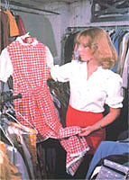

A reader shares her grandmother's sage advice on increasing the life span of quality clothing.
Eighteen years ago, when I was still in high school, I bought a pure wool skirt for the then extravagant sum of $15.95. My mother scolded me for spending so freely . . . but my grandmother came to my defense, reminding Mom that quality wool wears well. She predicted that my purchase, if given proper care, would last for a good many years.
Well, I'm running a household of my own now, and Gram's prophecy has turned out to be correct. I still wear that skirt . . . and with it, I often don a 30-year-old sweater that belonged to my mother, and a pair of leather boots that have weathered six years of wintertime salt and slush. Furtherrhore, on special occasions I wear a silk blouse my mother bought 35 years ago . . . and match it with a hand-me-down cotton skirt of about the same vintage.
Of course, most hardworking jeans and flannel shirts can't be expected to last forever, but you can get many seasons of use from your "good clothes" if you simply follow some practical advice regarding their selection and care. My grandmother taught me that real thriftiness involves buying only quality clothing . . . wearing and storing it properly . . . and keeping it clean and in good repair. And her advice applies not only to such natural fibers as wool, cotton, and silk, but to leather goods as well!
BUY THE BEST
In her time, Gram never had to deal with synthetic fabrics, and I've chosen not to. The "real thing" may often be more expensive initially, but fine natural-fiber cloth lasts longer and is far more comfortable to wear than synthetics, which don't breathe and tend to trap moisture against the skin.
According to my grandmother, the poor can afford only the best . . . however, when she said "best" she didn't necessarily mean "new". If you shop carefully (and especially if you possess the sewing skills needed to update a somewhat outmoded find or alter a garment to fit), you can often unearth once expensive quality clothing - for very reasonable prices - at thrift stores and garage sales.
When I examine any potential purchase, I first make sure the garment is 100%-pure natural fiber, not a natural/synthetic blend. The cloth should have a tight, even weave with no pulls, puckers, or bulges. All of the seams should be straight, too ... with small, even stitches and the raw edges finished. The buttonholes should be finely bound, plaids should match, and zippers and pockets should be reinforced. Similarly, knits - such as jerseys and sweaters - should be of pure wool. The knit should be even and firm, and the inside edges and buttonholes should be securely finished to prevent unraveling. All these details are hallmarks of a well-crafted article of clothing that should give many years of service.
WOOLENS . . .
Once you're the proud owner of a woolen garment, wear it with care. My grandmother told me always to slip on an undershirt or blouse beneath a sweater or dress in order to keep the wool from absorbing perspiration and body oils. Remember, though, that "underwear" should also be of a pure natural fiber, such as cotton, if it's to wick moisture away from the body instead of trapping it.
When you've finished wearing a piece of woolen apparel, check it carefully for rips or tears, and attend to such damage before you put the garment back in the closet. A few conscientious stitches can prevent the loss of a button or keep a small split seam from turning into a gaping hole.
At the same time, inspect the item for stains or spills. Dirt and grease seem to offer an open invitation to moths, and particles of grime embedded in the fabric will eventually weaken the fibers. Stains and spills should be blotted immediately with an absorbent towel, then sponged with clear, cool water, and blotted yet again. If the spot was caused by grease or oil, sponge it with water and sprinkle the stain with baking soda. Let the powder dry, and then gently brush it off.
Of course, sometimes a piece of clothing will need more than mere spot removal. When it was necessary to thoroughly clean a woolen garment, my grandmother would hand-wash it in cool water with a mild shampoo (not soap), and then rinse the item in a basin of cool water to which she had added three tablespoons of vinegar. It seems that wool, being a natural fiber, is acidic rather than alkaline and needs to maintain a proper pH balance much as does human hair. Hence shampoo (which is milder than soap and doesn't strip natural oils) and vinegar (which restores acidity) seem to work well together. [EDITOR'S NOTE: Some people may want to use Woolite "cold water wash" instead of shampoo.]
I've also adapted Gram's technique to use when cleaning several skirts, sweaters, or pairs of slacks at one time in the washing machine. I set my washer on a gentle cycle, fill the tank with cool water, add one-third cup of shampoo per load, and pour one-half cup of vinegar into the rinse water.
[EDITOR'S NOTE: We checked with Joyce Armstrong - the home extension agent for Henderson County, North Carolina, where MOTHER is located - for her ideas about cleaning wool. She says she has had great success with a method she read about that was developed in Scotland. According to Joyce, old-fashioned ammonia - the nonsudsing type - forms a chemical linkage to wool and reacts favorably with dyestuffs. Her method involves running a sink or basin full of barely warm water, and adding two tablespoons of ammonia and several drops of an oil (such as lanolin or vegetable oil). She simply swishes the garment around, rinses it well, and squeezes the excess water out.]
After being washed, sweaters and other knits should be spread out on a towel . . . patted into their original shapes . . . and left undisturbed until they're almost dry. Skirts and trousers should be hung on clip-type hangers or secured to regular hangers with snap clothespins. In either case, when the woolens are still barely damp, they should be pressed with a steam iron. Deal with the inside of the clothing first, being careful to iron all the seams flat, and then turn the garment over and press the right side. When ironing the outsides of wool apparel, some people like to use a pressing cloth (simply a piece of tightly woven fabric - such as a worn pillowcase - that's placed over the garment to protect it from direct contact with the iron).
Once your woollies are clean and fresh, you'll want to store them carefully. I make cloth sachets and stuff each one generously with cedar chips, which I buy in bulk at a dime store. Then I hang several sachets in each closet and place one in every dresser drawer, allowing the pungent woodsy aroma to discourage moths. (Thus I never have to worry about my children or pets eating a mothball . . . nor do I have to contend with the pervasive odor of commercial mothproofing preparations.)
My grandmother also relied on dried rosemary leaves - or a mixture of equal parts of southernwood, wormwood, and lavender - when stuffing her insect-deterring sachets. However, whether you use cedar chips or an herbal concoction of your own, be sure that the sachets are amply stuffed and that the finished packets are distributed evenly throughout your closets and drawers.
When I'm packing my woolens away for the summer, though, I use a different technique. I just store the clean clothes in a trunk, with old sheets separating the layers, then strew cedar chips in the folds of the sheets and tuck a cedar sachet into each corner of the trunk.
If you prefer, you can hang your clothes up in a fabric garment bag - or protected by an old sheet - and attach a sachet to every other hanger or so. (Do not wrap your apparel in plastic, because it'll trap moisture and prevent the cedar-permeated air from penetrating the woolen fabric and warding off moths.)
. . . COTTONS . . .
Most folks know that woolens require special handling, but you might be surprised to learn that cotton fabrics benefit from careful treatment, as well. Again, it pays to buy quality materials . . . keep the clothes clean and mended . . . avoid harsh cleansers . . . and store the garments properly. I wash cottons in cold water with mild soap (rather than shampoo), and I use the same vinegar rinse that serves my woolens so well. In fact, I stopped using strong detergents and bleaches altogether after my grandmother showed me that sunlight brightens white fabrics just as well as the chemicals do. Now, I simply hang the clean, damp clothes in the sun to dry, and then press them as usual .
. . . SILKS . . .
Silk is, of course, far more delicate than either cotton or wool, but it will respond favorably to home cleaning. I simply handwash my silks - one at a time - in shampoo and cool water, and then use a tablespoon of vinegar in the rinse basin. Once the garment is clean, I gently squeeze the water out (because vigorous wringing would encourage wrinkles) and roll the damp item in a dry towel for half an hour or so.
Because of its delicacy, silk must be pressed rather gingerly. Set the iron on "low" (or on the "silk" setting if your appliance has one), and be sure to use a pressing cloth. Start while the silk is still slightly damp, and begin by ironing, carefully and gently, on the wrong side of the fabric. Then turn the garment and press it lightly (still using the protective cloth) on the right side.
Since I don't own any brightly colored silk clothes, I haven't tried my at-home method for cleaning such items. I have heard, however, that the dye in deeply hued silk cloth has a tendency to streak and mottle . . . so you may want to try a "patch test" on an out-of-the-way section of the garment or a similar scrap of cloth before using my technique on your valuable silks .
. . . AND LEATHER
Leather, despite the fact that it's quite durable, needs loving attention if it's to give you long service. The job isn't a difficult one, though . . . in fact, leather will stay soft and supple if you follow two rules: Keep it clean . . . and keep it oiled.
As with fabrics, it's important to prevent dirt and grime from working into the hide's grain. I use ordinary saddle soap to clean my leather shoes, boots, belts, purses, and gloves. To do so, just dampen a rag thoroughly, lather up the soap, and rub the item well until all traces of grit are gone. Then take another clean, wet rag and wipe off the soap film. Finally, rub the surface dry with a soft towel, and oil the leather.
There are a great number of appropriate lubricants on the market, and all that I've tried have worked well. In fact, I've even used petroleum jelly on leather goods (and Grandma often used lard). Whatever emollient you apply, be sure to rub it in thoroughly, especially around the seams. [EDITOR'S NOTE: One of MOM's staffers who has worked with saddlery says that many oldtimers prefer to use animal-derived products for conditioning fine leather items. Mink oil and pure neat's-foot oil both do superior jobs.]
During the winter, I grease my boots every other day or so to protect them from the constant salt and slush of city sidewalks. I first wipe them to remove any salt residue, then coat them well with oil and rub it in. And about once a week, I clean the footgear completely, using saddle soap, and follow the washing with yet another greasing. This treatment has kept my boots supple, waterproof, and free of salt stains for the past six years.
Remember, too, that one should never put leather near a heat source, such as a woodstove or radiator, to dry . . . since the direct heat will draw out the natural oils, causing the article to stiffen and perhaps even crack. If you do happen to get your boots or shoes soaked, blot the water off, stuff the footwear with soft rags (so they'll hold their shape), and let them dry slowly at room temperature. Check the stuffing occasionally, too . . . and if the rags become damp, replace them with dry ones.
Small items such as purses, gloves, and belts don't require the same rigorous attention as do boots. I simply clean the accessories when they seem to need it and keep them well conditioned with oil. It's a good idea to let purses and belts dry overnight after they've been greased and to rub them with a fresh cloth before using them. (After all, you don't want a leftover blob of oil to stain your carefully cleaned clothing!)
The fact of the matter is that wearables respond to care and maintenance just as do quality tools. And a little bit of discipline, a regular cleaning routine, and some preliminary consideration in the selection of cloth and leather goods seem to be small sacrifices when you realize that they can make your wardrobe last longer, and help you avoid harsh chemical cleansers . . . while dressing better!
|
 |
|
|